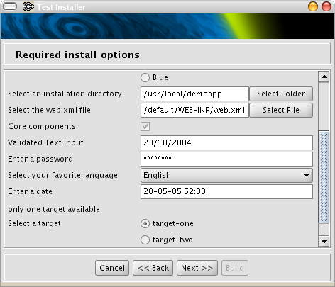
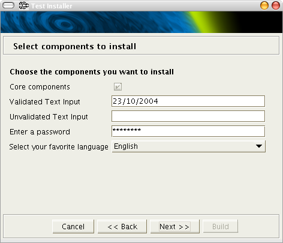
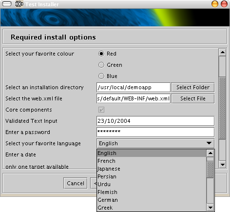

|
|
||
|---|---|---|---|

|
Look And FeelThe Swing GUI can be shown with a configurable appearance using Java's pluggable look and feel feature. AntInstaller includes a look and feel by JGoodies which is now licenced under a BSD license.Since JGoodies is under a good open source license it has been possible to make minor modifications to the code to enable antialiasing of text components. This is more resource intensive but looks a lot better. In order not to clash with the original JGoodies code the modifications have be repackaged as org.tp23.jgoodies.*
so both UIs can be on the classpath at the sametime. In AntInstaller the antialiasing can be activated with the antialiased attribute
in the installer element. When designing a cross platform installer remember that Micro$oft look and feels will not run on other platforms and will throw exceptions. Some of the JGoodies look and feels have the same issue, so check first. There is small look and feel included with AntInstaller that is a simple modification of the MetalLookAndFeel that uses a monochrome theme and less use of bold fonts, the font size is also reduced one point. This look and feel has been included to enable installers to be delivered with a consistent look on multiple platforms and have space on the buttons and labels to show the default English text in the installer. The download size is also reduced. For more space for text the width of the installer can be increased with the wide attribute of the installer element in the configuration file.The purple theme has been removed because it looks naf! (sorry Sun but its true). Setting the look and feelTo set the look and feel for the swing GUI thelookAndFeel attribute of the installer element in antinstall-config.xml should be set. The value of the lookAndFeel attribute should be a fully qualified class name or one of the following values that have special treatment.
org.tp23.jgoodies.plaf.plastic.PlasticXPLookAndFeel is the default.If the default look and feel or greymetal is specified in the configuration the Ant task will include the correct classes automatically in the self-extracting or non-extracting Jar. If a custom look and feel is to be used the classes must be added specifically to the classpath or inside the Jar. If the self-extracting jar is used, in order to show the progress panel with the correct look and feel, the value in the configuration file can not be used since it is not yet loaded. An additional element Look-And-Feel to the META-INF/MANIFEST.mf file should be added.Provided the installer is build with the Ant task this is handled automaticaly. ScreenshotsJGoodies -org.tp23.jgoodies.plaf.plastic.PlasticXPLookAndFeel Metouia - net.sourceforge.mlf.metouia.MetouiaLookAndFeel Grey Metal - org.tp23.antinstaller.renderer.swing.plaf.ModLookAndFeel |